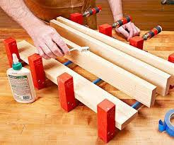
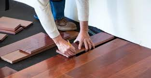

El primer paso es entender qué necesita el cliente. Esto incluye reunirse para discutir el proyecto, escuchar las ideas del cliente y obtener detalles sobre el espacio o los muebles que quiere fabricar o restaurar.
Después de la consulta inicial, el carpintero comienza la fase de diseño, en la que se crea un plan detallado del proyecto.
Una vez aprobado el diseño, el carpintero se encarga de obtener los materiales necesarios para el trabajo.

En este paso, el carpintero comienza a unir las piezas para crear la estructura o mueble.

Si el proyecto requiere instalación en un espacio determinado (como una cocina, puertas, o armarios), el carpintero se encargará de colocar la pieza final en el sitio.